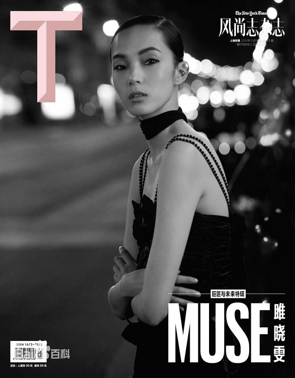
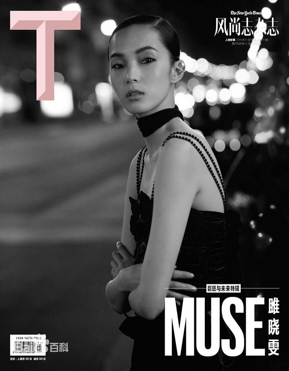

1989年5月19日 陕西西安 中国
雎晓雯，1989年5月19日出生于陕西西安，中国内地女模特。
2009年，雎晓雯因参加中国国际汽车模特大赛获得冠军后进入了模特行业，同年，雎晓雯在职业模特大赛陕西赛区获得了女模冠军。2010年，雎晓雯为《时尚芭莎》3月刊拍摄了封面 。2011年，雎晓雯签约了纽约模特经纪公司IMG ，同年，雎晓雯被外媒《New York Magazine》评为秋冬季的十佳新人，顺利闯入国际网站models十佳模特新人排行榜，位居第一。2012年2月，雎晓雯登上了权威网站Models的全球超模榜单，排名第50位。2013年，雎晓雯为《Vogue》中国版拍摄了3月刊 ；9月，在全球超模排行榜中，雎晓雯排名第29位 。2015年，雎晓雯为《Vogue》杂志意大利版6月号“中国特刊”拍摄了封面。2016年11月，雎晓雯首次亮相维多利亚秘密年度大秀。2017年11月，雎晓雯再次登上维多利亚的秘密的T台。